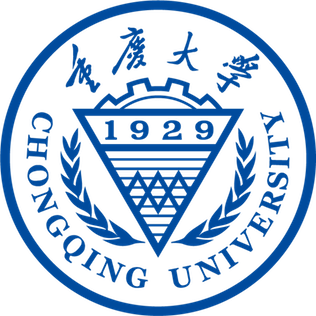

Mentor: 高旻 | Min GAO.
研究方向: 数据挖掘、信息检索、推荐系统、强化学习。
 (+86) 15215023127
(+86) 15215023127
 wsq852086890
wsq852086890
Chongqing, China
教育背景
|  |
重庆大学 · 硕士 | Chongqing University · Master of Science
2020.09 - 2023.06 (expected)
大数据与软件学院 · 软件工程专业
GPA: 4.0/4.0
Mentor: 高旻 | Min GAO.
研究方向: 数据挖掘、信息检索、推荐系统。
|
|
|
重庆大学 · 本科 | Chongqing University · Bachelor of Science
2016.09 - 2020.06
大数据与软件学院 · 软件工程专业
GPA: 3.44/4.0
Mentor: 高旻 | Min GAO.
毕业论文：基于链接分析和聚合的营销推荐研究与实现
|
Research
Who Are the Best Adopters? User Selection Model for Free Trial ItemPromotion
TBD '22
IEEE Transactions on Big Data.
Download:
[PDF]

Fine-Grained Spatial-Temporal Representation Learning with Missing Data Completion for Traffic Flow Prediction
CollaborateCom '21
International Conference on Collaborative Computing, 2021.
Download:
[PDF]
实习经历
| 2022.06-2022.09 |
之江实验室 算法工程师
参与多智能体强化学习(MARL)研究,调研MARL算法在多智能体协同路径规划以及动态避障场景中的应用情况; 参与Unity3D展览场景搭建及后续仿真环境测试。
设计、开发多机器人协同路径规划学习相关算法; 协助相应算法落地到亚运会之江展览场景中。实习评级为优(前10%)
|
参与项目
| 2022.01-2025.12 |
“基于域自适应与多任务序列关系感知的谣言应对研究 国家自然科学基金面上项目 (62176028)”
本项目提出基于域自适应与多任务序列关系感知的谣言应对方法。围绕谣言早期检测、谣言潜在传播行为预测、谣言治理关键用户挖掘展开研究。
主研，负责用户传播行为预测板块。
|
| 2020-2022 |
“突发公共事件场景下社交网络用户虚假言论行为预测研究”
突发公共事件场景下样本总体偏少，而且数据存在“高噪声、类别不均衡、变化快”的问题，对用户不良言论行为预测的准确性、鲁棒性和时效性方面带来巨大挑战。项目在实现用户言论及用户基本特征提取的基础上，从“特征、模型、评价”三个层面展开研究应对这些挑战。
负责社交网络用户特征建模板块。
|
| 2020.07-2020.09 |
“重庆两江生态渔业预售系统项目”
为重庆两江生态渔业开发一套以鱼卡预售为主的销售系统。
微信小程序板块UI设计、鱼卡图像识别、数据库改善工作及文档撰写。
|
获奖荣誉
| 2021 | 重庆大学优秀研究生。 |
| 2020 | 重庆大学研究生学业奖学金。 |
| 2019 | 重庆大学软件工程实训优秀个人。 |
| 2019 | 重庆大学优秀共青团员。 |
| 2017-2018 | 连续两次获得爱心家教优秀志愿者称号。 |
| 2016-2020 | 多次获得重庆大学校级综合奖学金。 |
综合技能
| 编程 | 熟练掌握 Python 语言机器学习和深度学习相关模型和框架 (TensorFlow 和 Pytorch)。 |
| 语言 | 英语四级：578，英语六级：531。良好的听说读写能力，快速浏览英语专业文件及书籍。 |
| 爱好 | 跑步健身，摄影摄像，视频制作(B站主页)，美食烘焙 |